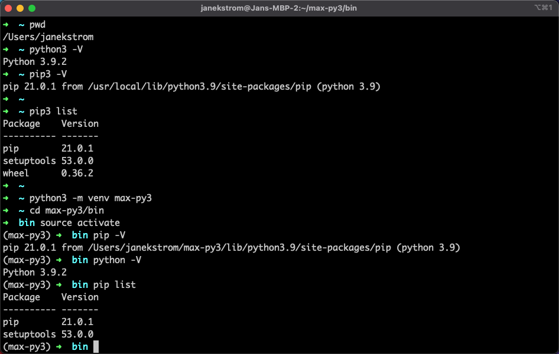
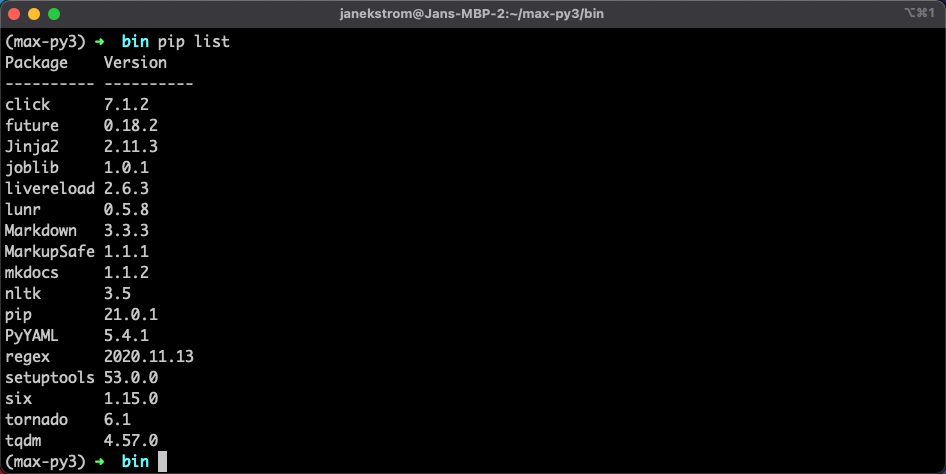

Pre-Requisite Instructions
Here are the required pre-requisites for contributing to The Maximo Labs.
Install Python 3
It is recommended to install and use the latest release of Python 3. First install Homebrew on Mac and then Python 3:
/bin/bash -c "$(curl -fsSL https://raw.githubusercontent.com/Homebrew/install/HEAD/install.sh)"
brew install python3
Additional Information
Installing Homebrew: https://brew.sh/ Installing Python 3: https://formulae.brew.sh/formula/python3 Uninstalling tips: https://huybien.com/how-to-completely-uninstall-python-on-macos/ https://docs.brew.sh/FAQ#how-do-i-uninstall-homebrew
Install MkDocs
You will be using the package installer for python (pip) to install MkDocs within a python virtual environment (venv). First lets get the python 3 virtual environment up and running:
cd ~
pwd
python3 -m venv max-py3
cd max-py3/bin
source activate
python -V
pip -V
pip list

Then you will install the MkDocs packages and verify the packages has been installed:
pip install mkdocs
pip list

You can deactivate the virtual environment with this command:
deactivate
Additional Information
MkDocs: https://www.mkdocs.org/ Package Installer for Python: https://pip.pypa.io/en/stable/ Python 3 virtual environments: https://docs.python.org/3/library/venv.html
Git / Github setup
- Get a Github account
- IBMers can get access to the IBM Github area here:
https://w3.ibm.com/developer/opensource/contribute/ibm-github/ - Access the Github repo of the IBM Maximo Labs here:
https://github.com/IBM/maximo-labs - Access the latest published labs here:
https://ibm.github.io/maximo-labs/
(This might not contain the latest changes from the Github repository)
Clone the github repository down to your local machine:
cd ~
mkdir Github
cd ~/Github
git clone git@github.com:IBM/maximo-labs.git
cd maximo-labs
Now build the complete site on your local machine:
./build_all_mkdocs.sh
Open a browser and navigate to http://localhost:8080/ and take a look at the complete IBM Maximo Labs locally.
To find these contribute instructions navigate to http://localhost:8080/contribute
Next step
You are now ready to either add to an existing lab or create a new lab from scratch.